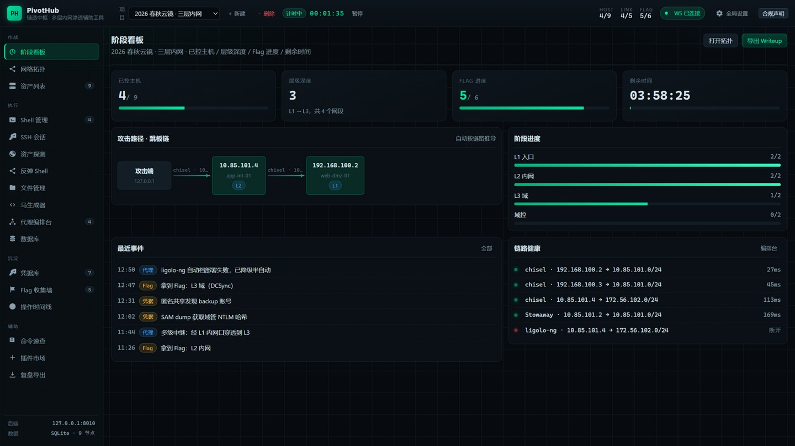
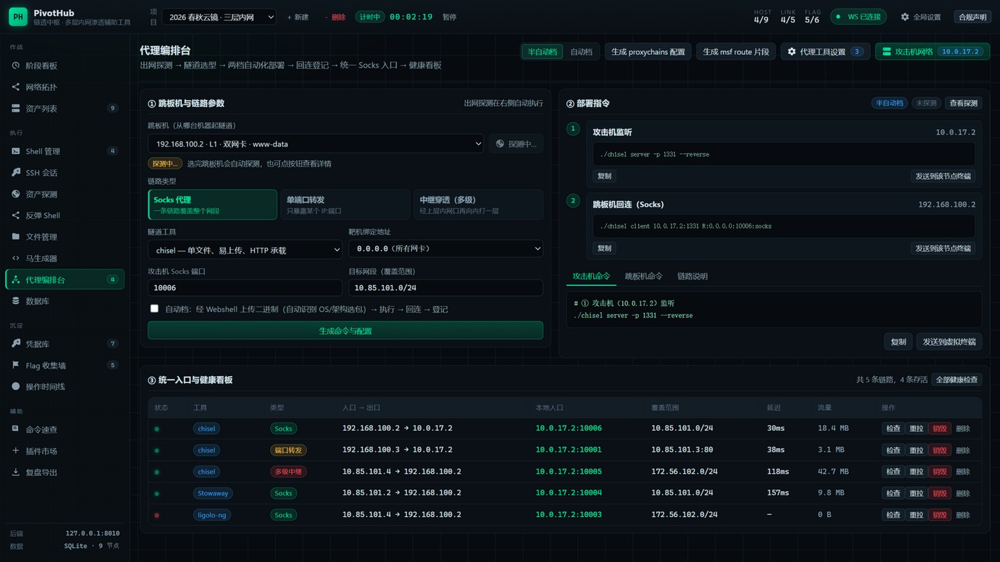
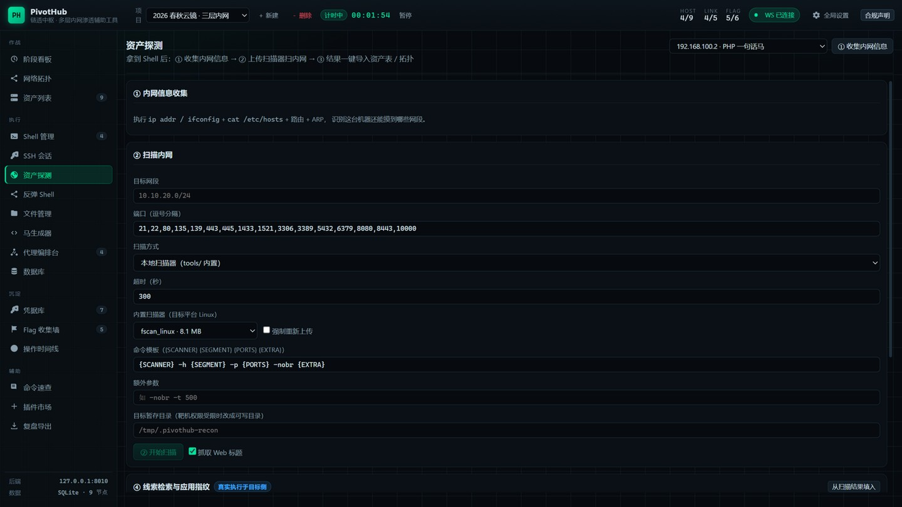
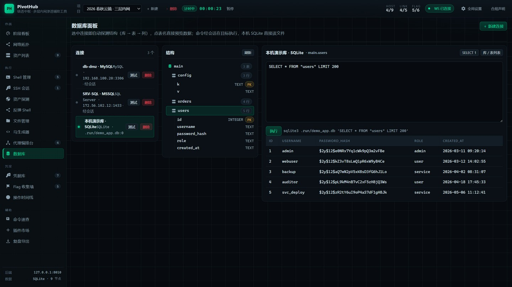
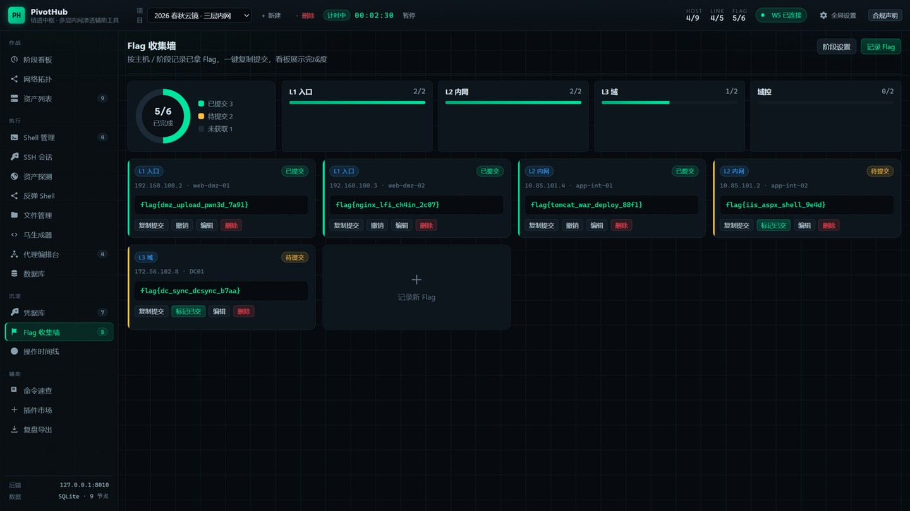
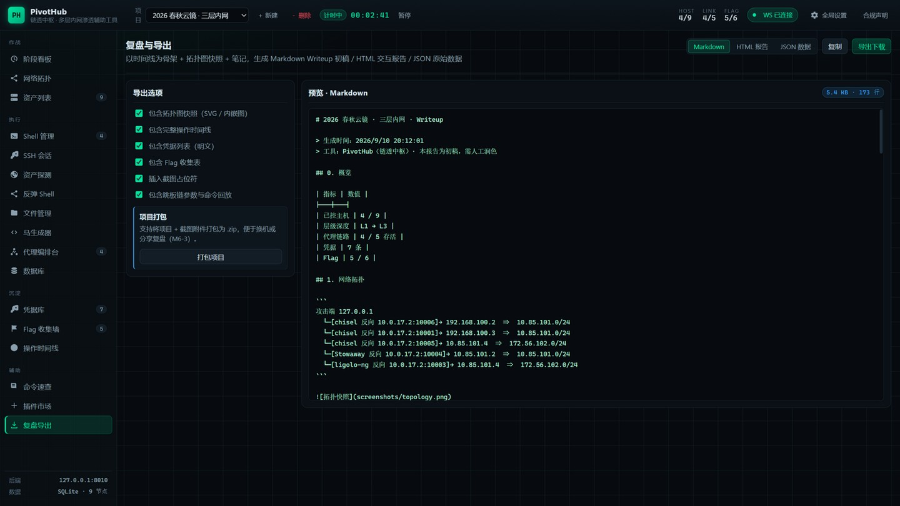

PivotHub（链透中枢）面向 CTF 与授权靶场的多层内网场景：统一会话抽象把 WebShell、反弹 Shell、SSH 与数据库连接放进同一套终端 / 文件 / 提权 / 凭据流程；反弹 Shell 载荷库、终端固化、 代理编排、资产探测、Flag 墙与复盘导出串成一条完整链路。 所有状态来自本地 SQLite，命令经会话层真实执行，不伪造数据、不静默降级。
合规声明：本工具仅用于 CTF 竞赛、授权靶场与教学演示，禁止对未授权的真实目标使用。 面板默认只监听 127.0.0.1，不内置任何针对真实目标的 exploit； 所有回连 / 隧道能力都需要操作者在自己的授权环境中显式开启。
不是「把命令拼好给你复制」的命令板，而是把每一步都落到真实会话上执行、并把结果写回本地库的操作台。
WebShell（PHP/JSP/ASP/ASPX/命令回显端点）、反弹 Shell、SSH 四类会话共用 exec / list_dir / read_file / write_file 契约，终端、文件管理、提权、凭据扫描只写一遍。
17 种语法 × 10 种编码 × 平台标注，按目标真实探测（command -v）标注可用性； 监听 → 载荷 → 回连自动登记为会话，延迟与来源端口一目了然。
真实探测交互能力（tty / TERM / stty size）→ 按平台选技法（python PTY / script / socat …） → PTY 内回读验证 → stty sane + 窗口尺寸同步收尾。形态徽标区分「伪终端 / 交互通道 / 已固化」。
出网探测 → 隧道选型 → 一键部署并登记链路（多级中继自动推导）；链路健康看板对 socks 做真实探测， 失败按阶段如实报错（不伪造成功）。
网卡 / 路由 / ARP 一键成表；内置 fscan 上传扫描（分片直传或 HTTP 拉取，自动回退）， 结果解析后一键入库上拓扑；另有指纹、目录上下文发现与配置文件线索检索。
不是套壳 UI：经会话在目标机真实执行 mysql / psql 客户端， 库表结构自动探测、任意 SQL、耗时统计，中文无乱码。
按主机 / 阶段记录 Flag（阶段名项目级可配），完成度看板 + 一键复制提交； 资产 / 会话 / 代理 / 凭据 / Flag 全部自动入时间线，可加笔记。
概览 / 拓扑 / 跳板链 / 时间线 / 凭据 / Flag 一键导出 Markdown · HTML · JSON， 直接作为 writeup 骨架。
提权规则、终端固化技法、命令速查模板都是本地 data/ 数据包， 支持启用 / 停用 / 卸载，扩展不必改代码。
截图取自空库首次启动播种的演示项目（虚构数据）。完整 17 张见 README。






从拿到第一个 Web 入口，到把内网资产、隧道、凭据与 flag 全部落库：每一步都有对应的视图，且都真实执行。
马生成器产出 PHP/JSP/ASPX 一句话马或命令回显端点；RCE / 上传 / 反序列化拿到的通道直接登记为会话。
终端固化把伪终端变成真 PTY；反弹 Shell 页开监听、下发载荷、回连自动登记，终端即用。
出网探测回答「能不能回连到我」，回连端口矩阵实测可用端口，编排台按结论部署 chisel / frp / Neo-reGeorg 并登记链路。
资产探测扫下一层网段、凭据库记下可复用口令、提权助手给出建议、Flag 墙登记战果、复盘导出写报告。
浏览器（Vue 3 + ECharts，零构建 · 本地 vendor） │ REST /api/* WebSocket /ws（心跳 · 扫描日志 · 终端原始流） ▼ FastAPI 路由层 pivothub/api/* 项目 / 主机 / 会话 / 链路 / 凭据 / Flag / 时间线 / 导出 / 插件 │ ├── 服务层 pivothub/service/* 出网探测 · 终端固化 · 编排计划 · 线索检索 · 指纹 · 文件暂存 · 提权 ├── 会话层 pivothub/session/* SessionBase 契约 + 驱动：http-shell / reverse / ssh / local │ └ 反弹通道：哨兵同步 exec · 原始 PTY 流 · 断线即标记 ├── 适配层 pivothub/adapters/* chisel / frp / Neo-reGeorg 部署 · 健康检查 · 销毁 └── 存储 SQLite（WAL）+ data/ 项目 / 资产 / 会话 / 链路 / 凭据 / Flag / 时间线 · 命令与规则包
用内置浏览器以「真实使用者」视角黑盒操作 6 道授权靶题（三层内网 / DMZ / 域 / 容器逃逸）， 共取回 17 / 20 个 flag。评测报告同时暴露了工具当时的短板（已在本轮修复： 反弹通道哨兵、出网探测假阳性、Flag 归属校验、终端固化门槛、扫描器传输）。
| 题目 | 入口 | 链路 | flag |
|---|---|---|---|
| ② 孤岛 · 封锁边界 | :8083 | ThinkPHP 5.0.23 RCE → WebShell → 出网实测 → OA 凭据 → 2375 未授权挂载读宿主 | 3 / 3 |
| ③ 深潜 · 三层内网 | :8084 | SSTI → 反弹会话 → Shiro-550（零外联验证）→ SUID 提权 → SSH 横向 → cron 投毒 | 3 / 3 |
| ④ 回声 · 遗忘的部署 | :8085 | Tomcat PUT 写马 → 一键提权 root → 数据库面板查 secret_vault | 3 / 3 |
| ⑤ 终端 · 协作平台 | :8086 | Drupal 渲染数组注入可达但命令执行被禁（黑盒未突破） | 0 / 3 |
| ⑥ 密语 · 全文检索 | :8087 | Log4Shell → 反弹会话 → Registry 镜像层取配置 → cron 提权 | 3 / 3 |
| ⑦ 幽冥 · 纵深要塞 | :8088 | OpenWire RCE → Nacos 建号拉配置 → SSH 备份机 → docker.sock 逃逸 | 4 / 4 |
报告中的靶场有效凭据与 flag 已打码（flag{REDACTED}）； 含实时 flag 的过程截图未随公开仓库发布。 报告全文：2026-09-11 · 2026-09-09。
后端一体化托管前端，零构建、离线可用：Python 起一个进程，浏览器打开即用。
# 1) 安装依赖（FastAPI / Uvicorn / SQLAlchemy / Pydantic） pip install -r requirements.txt # 2) 启动（监听 127.0.0.1:8000，前端由后端静态托管） python run.py # 等价 python -m pivothub # 3) 浏览器打开 → 首次进入会弹合规声明 → 空库自动播种演示项目 http://127.0.0.1:8000/ # 可选：跑测试（273 用例，含真机链路部署集成测试） python -m pytest tests -q
scripts/lab/ 提供 Docker Compose 靶场（含 DMZ / 内网 / 域层）， 可对本项目的会话、隧道、提权与扫描流程做端到端真机验证。
前端零构建：直接用静态服务器托管仓库根目录即可预览 UI；后端不可用时界面会显式报错，不会用假数据兜底。
提权规则 / 固化技法 / 命令速查模板都是 data/ 下的 JSON， 照格式加文件即可出现在插件市场。